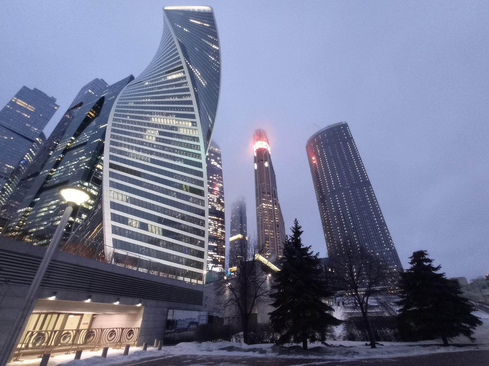

Little backstory - I work as a delivery guy. Sometimes I deliver food, sometimes I deliver documents and sometimes (like today) I deliver completely random shit. This was the worst order of my life - I had to drag 9 kilos of water bottles by foot. First I went to the bus stop (this took around 15 minutes), then I waited for the fucking bus to arrive (it arrived 20 minutes late), then I stood for 15 minutes in a bus fully-packed with people. I am talking Tokyo levels of "packed". I couldn't expand my lungs properly. Then I had to run for 20 minutes, because I was really late. But the order was to the 25th floor of a skyscraper. so I was hoping to at least ride an elevator and get a cool view of the city. But I didn't have my passport on hand, so I had to call my client and wait for him. While I was waiting, I was also yelled by a security guard. At the end of the day, I wasted a lot of time, I was very tired and depressed, and I earned around 4 bucks. While walking back to the metro station, I decided to at least take a photo of the skyscraper, that I was delivering to. Just to remember this moment.
